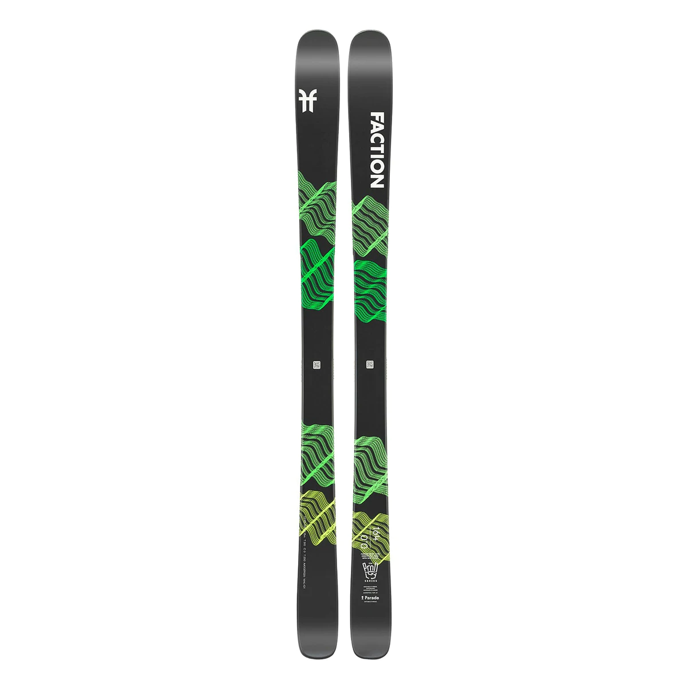

SKIGEEK

PRODIGY 0.0
117/85/109mm
2999kr
PRODUCT DESCRIPTION
A brand-new model for 21|22, the Prodigy 0.0 is the ideal entry point
into the world of freeskiing. This ski offers ease of use backed by
Faction’s premium quality. A lightweight Fusion core allows for
playful and effortless riding all over the mountain. Sidewall
construction underfoot pairs perfectly with the Elliptical Sidecut to
provide high-performance edge hold and intuitive maneuverability. And
to top it all off, Anti-Chip Micro-Cap construction backed by XL 2.5mm
Edges ensures this ski stands up to hard hits, year after year.
AVAILABLE LENGTHS
143
150
157
164
171